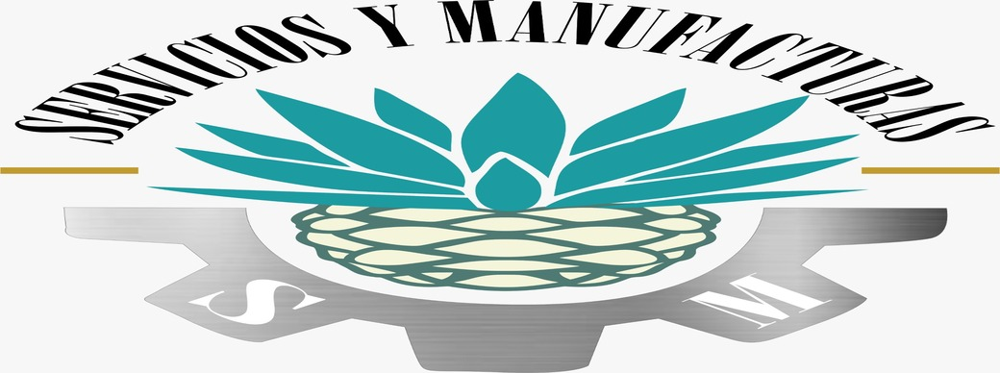

Historia
Servicios y Manufacturas SM fue fundada por la ciudadana María Refugio Salcido Murillo el Durante los primeros años de la vida profesional de María Refugio 15 de enero de 2007 en el municipio de Atotonilco el Alto Jalisco, esta empresa comenzó su historia como una microempresa laborando dentro de una casa de uso habitacional de aproximadamente treinta metros cuadrados y contando con el esfuerzo de tan solo quince empleados.
Tan solo ocho años después la demanda de producción incremento por lo cual se decidió rentar lo que era un taller de costura agregando así más espacio disponible y consiguiendo un total de treinta trabajadores dentro de la empresa.
En 2018 la empresa se vio forzada a dar un salto importante en el aspecto productivo y de infraestructura, la empresa comenzó su transición de ser una microempresa para convertirse en una pequeña empresa, dentro de esta transición la empresa paso de contar con un pequeño taller a tener dos bodegas de 350 metros cuadrados en Atotonilco el Alto y un recinto ubicado en Jesús María Jalisco, sumando un total de 140 personas laborando para la empresa.
Hoy en día la empresa cuenta con una plantilla laboral con más de doscientos trabajadores entre hombres y mujeres, distribuidos en cuatro recintos, en su haber se destaca la colaboración con cinco grandes empresas que forman parte de la industria tequilera y el manejo de más de 20 procesos diferentes de acondicionado para algunas de las marcas de tequila más importantes.